Density plot and histogram to illustrate the distribution of the data.
Usage
DensityPlot(
data,
x,
group_by = NULL,
group_by_sep = "_",
group_name = NULL,
xtrans = "identity",
ytrans = "identity",
split_by = NULL,
split_by_sep = "_",
flip = FALSE,
position = "identity",
palette = "Paired",
palcolor = NULL,
alpha = 0.5,
theme = "theme_this",
theme_args = list(),
add_bars = FALSE,
bar_height = 0.025,
bar_alpha = 1,
bar_width = 0.1,
keep_na = FALSE,
keep_empty = FALSE,
title = NULL,
subtitle = NULL,
xlab = NULL,
ylab = NULL,
expand = c(bottom = 0, left = 0, right = 0),
facet_by = NULL,
facet_scales = "free_y",
facet_ncol = NULL,
facet_nrow = NULL,
facet_byrow = TRUE,
legend.position = ifelse(is.null(group_by), "none", "right"),
legend.direction = "vertical",
seed = 8525,
combine = TRUE,
nrow = NULL,
ncol = NULL,
byrow = TRUE,
axes = NULL,
axis_titles = axes,
guides = NULL,
design = NULL,
...
)
Histogram(
data,
x,
group_by = NULL,
group_by_sep = "_",
group_name = NULL,
xtrans = "identity",
ytrans = "identity",
split_by = NULL,
split_by_sep = "_",
flip = FALSE,
bins = NULL,
binwidth = NULL,
trend_skip_zero = FALSE,
add_bars = FALSE,
bar_height = 0.025,
bar_alpha = 1,
bar_width = 0.1,
position = "identity",
keep_na = FALSE,
keep_empty = FALSE,
use_trend = FALSE,
add_trend = FALSE,
trend_alpha = 1,
trend_linewidth = 0.8,
trend_pt_size = 1.5,
palette = "Paired",
palcolor = NULL,
alpha = 0.5,
theme = "theme_this",
theme_args = list(),
title = NULL,
subtitle = NULL,
xlab = NULL,
ylab = NULL,
expand = c(bottom = 0, left = 0, right = 0),
facet_by = NULL,
facet_scales = "free_y",
facet_ncol = NULL,
facet_nrow = NULL,
facet_byrow = TRUE,
legend.position = ifelse(is.null(group_by), "none", "right"),
legend.direction = "vertical",
seed = 8525,
combine = TRUE,
nrow = NULL,
ncol = NULL,
byrow = TRUE,
axes = NULL,
axis_titles = axes,
guides = NULL,
design = NULL,
...
)Arguments
- data
A data frame.
- x
A character string specifying the column name of the data frame to plot for the x-axis.
- group_by
Columns to group the data for plotting For those plotting functions that do not support multiple groups, They will be concatenated into one column, using
group_by_sepas the separator- group_by_sep
The separator for multiple group_by columns. See
group_by- group_name
A character string to name the legend of group_by
- xtrans
A character string specifying the transformation of the x-axis. Default is "identity". Other options see transform of
scale_x_continuous.- ytrans
A character string specifying the transformation of the y-axis. Default is "identity". Other options see transform of
scale_y_continuous.- split_by
The column(s) to split data by and plot separately.
- split_by_sep
The separator for multiple split_by columns. See
split_by- flip
A logical value. If TRUE, the plot will be flipped.
- position
How should we position the values in each bin? Default is "identity". Unlike the default position = "stack" in ggplot2::geom_histogram or ggplot2::geom_density, the default position is "identity" to show the actual count or density for each group.
- palette
A character string specifying the palette to use. A named list or vector can be used to specify the palettes for different
split_byvalues.- palcolor
A character string specifying the color to use in the palette. A named list can be used to specify the colors for different
split_byvalues. If some values are missing, the values from the palette will be used (palcolor will be NULL for those values).- alpha
A numeric value specifying the transparency of the plot.
- theme
A character string or a theme class (i.e. ggplot2::theme_classic) specifying the theme to use. Default is "theme_this".
- theme_args
A list of arguments to pass to the theme function.
- add_bars
A logical value. If TRUE, add lines to the plot to show the data distribution on the bottom.
- bar_height
A numeric value specifying the height of the bars. The actual height will be calculated based on the maximum density or count.
- bar_alpha
A numeric value specifying the alpha of the bars.
- bar_width
A numeric value specifying the width of the bars.
- keep_na
A logical value or a character to replace the NA values in the data. It can also take a named list to specify different behavior for different columns. If TRUE or NA, NA values will be replaced with NA. If FALSE, NA values will be removed from the data before plotting. If a character string is provided, NA values will be replaced with the provided string. If a named vector/list is provided, the names should be the column names to apply the behavior to, and the values should be one of TRUE, FALSE, or a character string. Without a named vector/list, the behavior applies to categorical/character columns used on the plot, for example, the
x,group_by,fill_by, etc.- keep_empty
One of FALSE, TRUE and "level". It can also take a named list to specify different behavior for different columns. Without a named list, the behavior applies to the categorical/character columns used on the plot, for example, the
x,group_by,fill_by, etc.FALSE(default): Drop empty factor levels from the data before plotting.TRUE: Keep empty factor levels and show them as a separate category in the plot."level": Keep empty factor levels, but do not show them in the plot. But they will be assigned colors from the palette to maintain consistency across multiple plots. Alias:levels
- title
A character string specifying the title of the plot. A function can be used to generate the title based on the default title. This is useful when split_by is used and the title needs to be dynamic.
- subtitle
A character string specifying the subtitle of the plot.
- xlab
A character string specifying the x-axis label.
- ylab
A character string specifying the y-axis label.
- expand
The values to expand the x and y axes. It is like CSS padding. When a single value is provided, it is used for both axes on both sides. When two values are provided, the first value is used for the top/bottom side and the second value is used for the left/right side. When three values are provided, the first value is used for the top side, the second value is used for the left/right side, and the third value is used for the bottom side. When four values are provided, the values are used for the top, right, bottom, and left sides, respectively. You can also use a named vector to specify the values for each side. When the axis is discrete, the values will be applied as 'add' to the 'expansion' function. When the axis is continuous, the values will be applied as 'mult' to the 'expansion' function. See also https://ggplot2.tidyverse.org/reference/expansion.html
- facet_by
A character string specifying the column name of the data frame to facet the plot. Otherwise, the data will be split by
split_byand generate multiple plots and combine them into one usingpatchwork::wrap_plots- facet_scales
Whether to scale the axes of facets. Default is "fixed" Other options are "free", "free_x", "free_y". See
ggplot2::facet_wrap- facet_ncol
A numeric value specifying the number of columns in the facet. When facet_by is a single column and facet_wrap is used.
- facet_nrow
A numeric value specifying the number of rows in the facet. When facet_by is a single column and facet_wrap is used.
- facet_byrow
A logical value indicating whether to fill the plots by row. Default is TRUE.
- legend.position
A character string specifying the position of the legend. if
waiver(), for single groups, the legend will be "none", otherwise "right".- legend.direction
A character string specifying the direction of the legend.
- seed
The random seed to use. Default is 8525.
- combine
Whether to combine the plots into one when facet is FALSE. Default is TRUE.
- nrow
A numeric value specifying the number of rows in the facet.
- ncol
A numeric value specifying the number of columns in the facet.
- byrow
A logical value indicating whether to fill the plots by row.
- axes
A string specifying how axes should be treated. Passed to
patchwork::wrap_plots(). Only relevant whensplit_byis used andcombineis TRUE. Options are:'keep' will retain all axes in individual plots.
'collect' will remove duplicated axes when placed in the same run of rows or columns of the layout.
'collect_x' and 'collect_y' will remove duplicated x-axes in the columns or duplicated y-axes in the rows respectively.
- axis_titles
A string specifying how axis titltes should be treated. Passed to
patchwork::wrap_plots(). Only relevant whensplit_byis used andcombineis TRUE. Options are:'keep' will retain all axis titles in individual plots.
'collect' will remove duplicated titles in one direction and merge titles in the opposite direction.
'collect_x' and 'collect_y' control this for x-axis titles and y-axis titles respectively.
- guides
A string specifying how guides should be treated in the layout. Passed to
patchwork::wrap_plots(). Only relevant whensplit_byis used andcombineis TRUE. Options are:'collect' will collect guides below to the given nesting level, removing duplicates.
'keep' will stop collection at this level and let guides be placed alongside their plot.
'auto' will allow guides to be collected if a upper level tries, but place them alongside the plot if not.
- design
Specification of the location of areas in the layout, passed to
patchwork::wrap_plots(). Only relevant whensplit_byis used andcombineis TRUE. When specified,nrow,ncol, andbyroware ignored. Seepatchwork::wrap_plots()for more details.- ...
Additional arguments.
- bins
A numeric value specifying the number of bins for the histogram.
- binwidth
A numeric value specifying the width of the bins for the histogram.
- trend_skip_zero
A logical value. If TRUE, skip the zero count when drawing the trend line.
- use_trend
A logical value. If TRUE, use trend line instead of histogram.
- add_trend
A logical value. If TRUE, add trend line to the histogram.
- trend_alpha
A numeric value specifying the alpha of the trend line and points
- trend_linewidth
A numeric value specifying the width of the trend line
- trend_pt_size
A numeric value specifying the size of the trend points
Examples
set.seed(8525)
data <- data.frame(
x = c(rnorm(500, -1), rnorm(500, 1)),
group = factor(rep(c("A", NA, "C", "D"), each = 250), levels = LETTERS[1:4]),
facet = sample(c("F1", "F2"), 1000, replace = TRUE)
)
DensityPlot(data, x = "x")
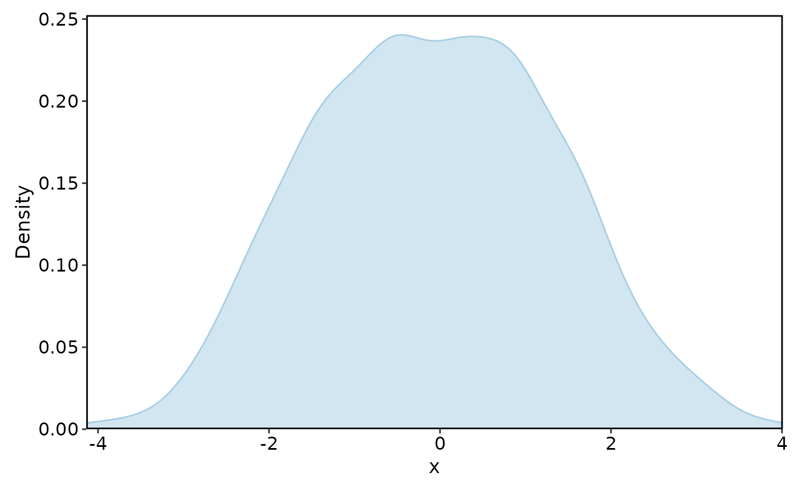
DensityPlot(data, x = "x", group_by = "group")
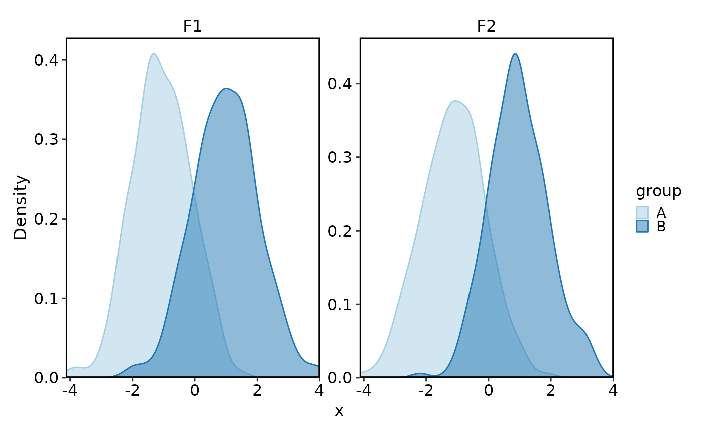
DensityPlot(data, x = "x", group_by = "group",
keep_na = TRUE, keep_empty = TRUE)
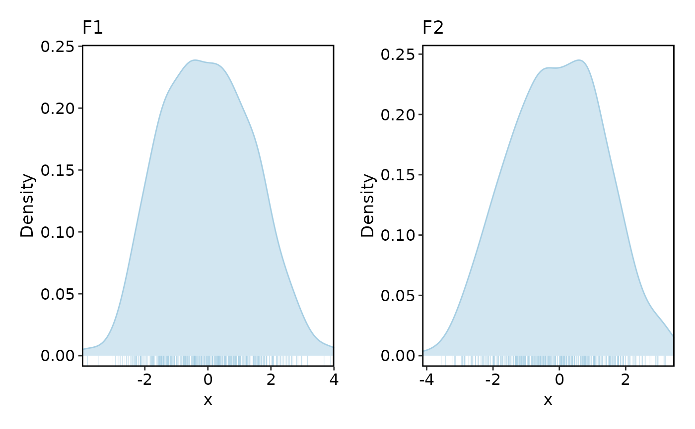
DensityPlot(data, x = "x", group_by = "group",
keep_na = TRUE, keep_empty = 'level')
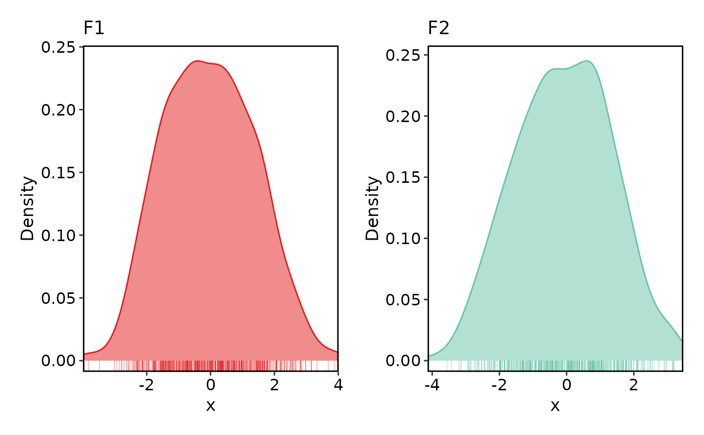
DensityPlot(data, x = "x", group_by = "group", facet_by = "facet")
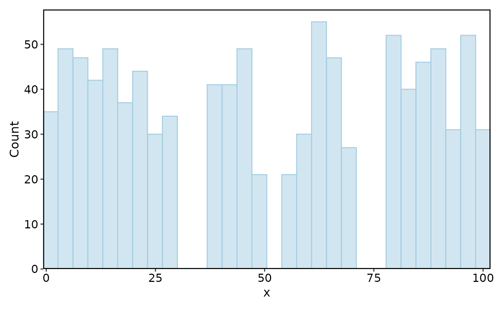
DensityPlot(data, x = "x", split_by = "facet", add_bars = TRUE)
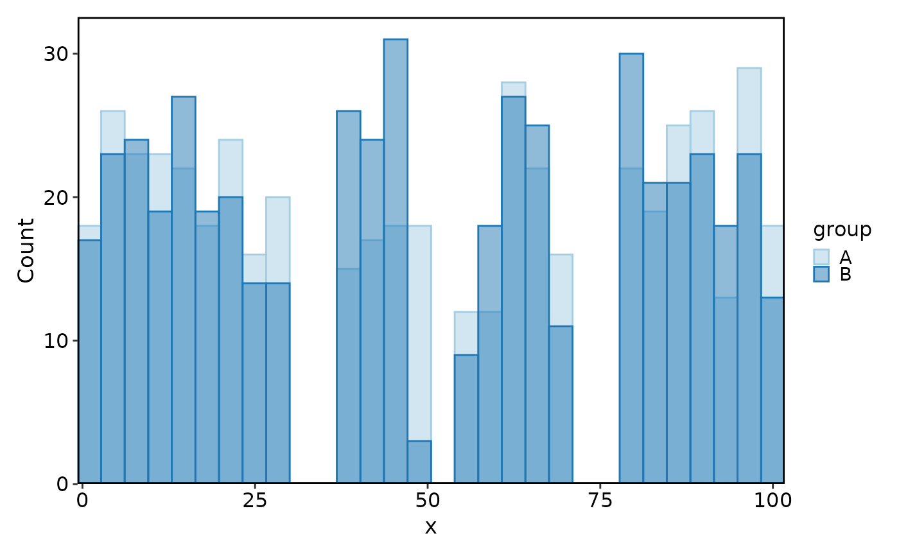
DensityPlot(data, x = "x", split_by = "facet", add_bars = TRUE,
palette = c(F1 = "Set1", F2 = "Set2"))
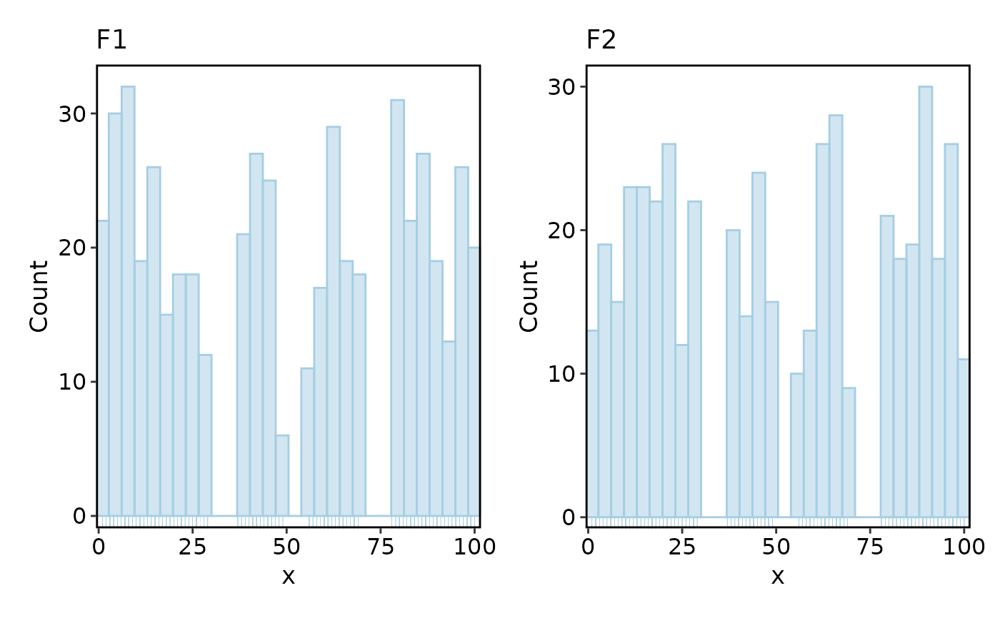
set.seed(8525)
data <- data.frame(
x = sample(setdiff(1:100, c(30:36, 50:55, 70:77)), 1000, replace = TRUE),
group = factor(rep(c("A", "B", NA, "D"), each = 250), levels = LETTERS[1:4]),
facet = sample(c("F1", "F2"), 1000, replace = TRUE)
)
Histogram(data, x = "x")
#> Using `bins = 30`. Pick better value with `binwidth`.
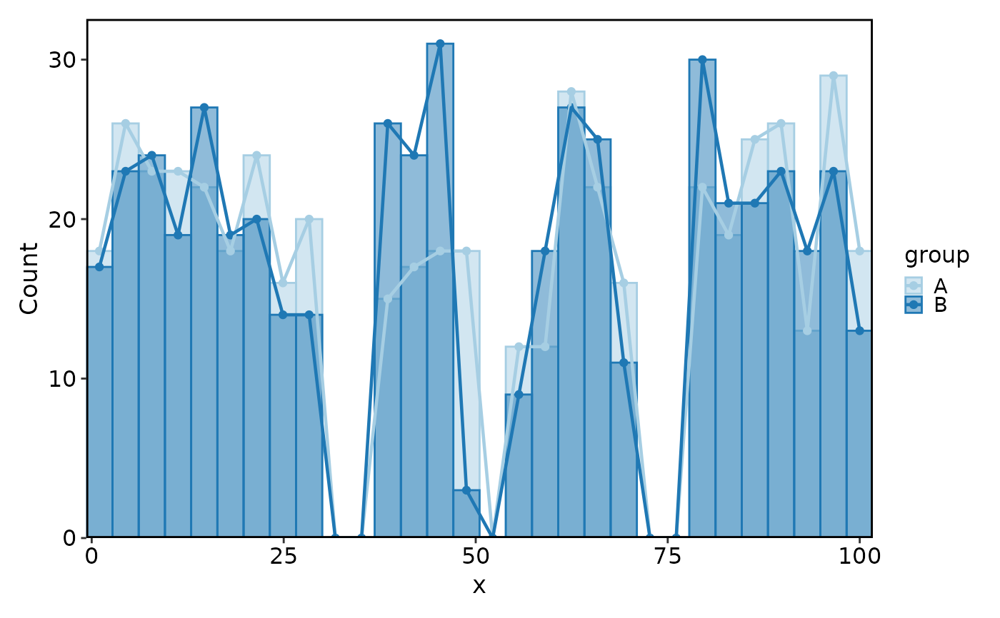
Histogram(data, x = "x", group_by = "group")
#> Using `bins = 30`. Pick better value with `binwidth`.
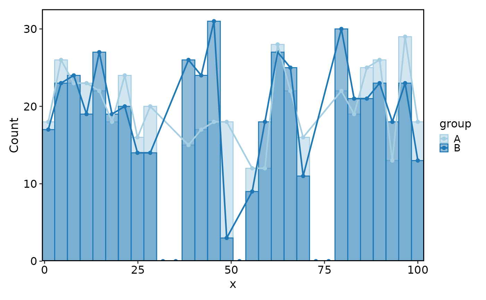
Histogram(data, x = "x", group_by = "group", keep_na = TRUE, keep_empty = 'level')
#> Using `bins = 30`. Pick better value with `binwidth`.
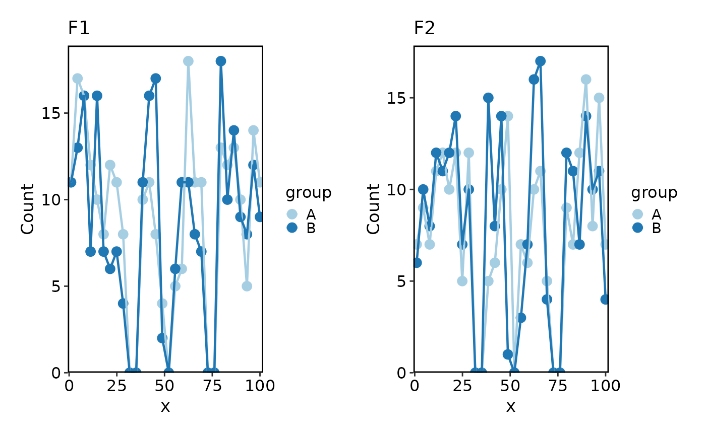
Histogram(data, x = "x", split_by = "facet", add_bars = TRUE)
#> Using `bins = 30`. Pick better value with `binwidth`.
#> Using `bins = 30`. Pick better value with `binwidth`.
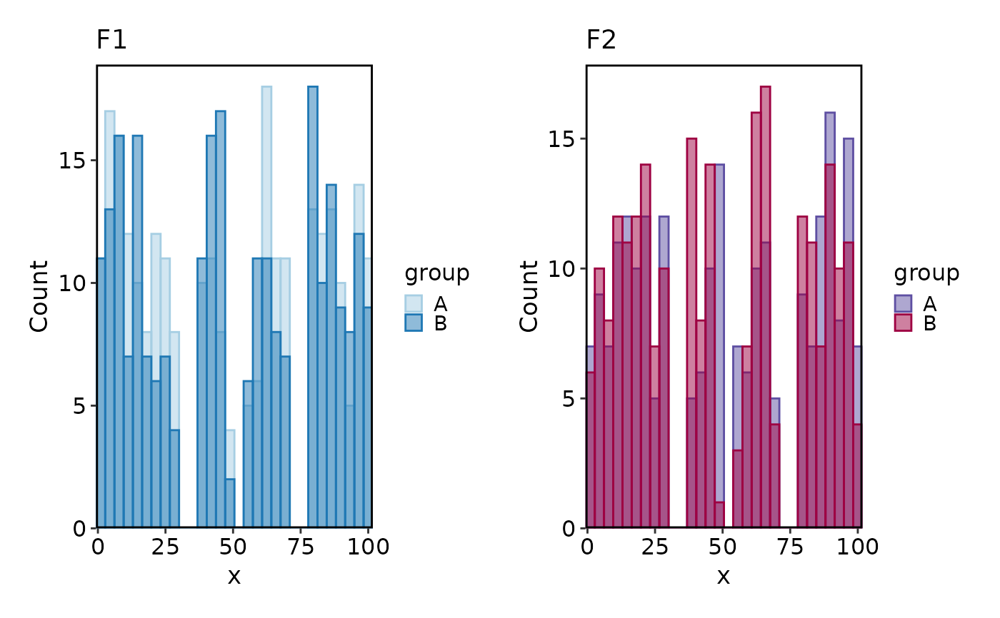
Histogram(data, x = "x", group_by = "group", add_trend = TRUE)
#> Using `bins = 30`. Pick better value with `binwidth`.
 Histogram(data, x = "x", group_by = "group", add_trend = TRUE, trend_skip_zero = TRUE)
#> Using `bins = 30`. Pick better value with `binwidth`.
Histogram(data, x = "x", group_by = "group", add_trend = TRUE, trend_skip_zero = TRUE)
#> Using `bins = 30`. Pick better value with `binwidth`.
 Histogram(data, x = "x", group_by = "group", split_by = "facet",
use_trend = TRUE, trend_pt_size = 3)
#> Using `bins = 30`. Pick better value with `binwidth`.
#> Using `bins = 30`. Pick better value with `binwidth`.
Histogram(data, x = "x", group_by = "group", split_by = "facet",
use_trend = TRUE, trend_pt_size = 3)
#> Using `bins = 30`. Pick better value with `binwidth`.
#> Using `bins = 30`. Pick better value with `binwidth`.
 Histogram(data, x = "x", group_by = "group", split_by = "facet",
palette = c(F1 = "Paired", F2 = "Spectral"))
#> Using `bins = 30`. Pick better value with `binwidth`.
#> Using `bins = 30`. Pick better value with `binwidth`.
Histogram(data, x = "x", group_by = "group", split_by = "facet",
palette = c(F1 = "Paired", F2 = "Spectral"))
#> Using `bins = 30`. Pick better value with `binwidth`.
#> Using `bins = 30`. Pick better value with `binwidth`.